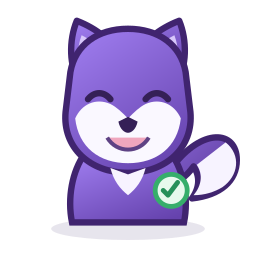

📂 Open an existing project
Select a Git repository or project folder that is already on this computer. GitPet will review its scope before watching it.

Let’s choose how you want to begin. You can change these settings later.
CHOOSE ONE WAY TO START
Already have a project on this computer? Open it directly—that is the recommended path for most users.
Select a Git repository or project folder that is already on this computer. GitPet will review its scope before watching it.
Copy a repository from GitHub or another Git server to this computer while preserving its complete history.
GitPet preserves Git history and opens Project Scope before it starts watching the repository.